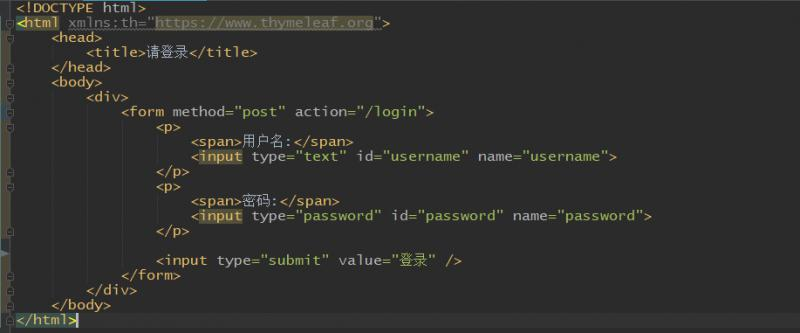

原文连接:https://www.cnblogs.com/guos/p/11607260.html
自定义登录页面
前面无论是使用默认配置，还是自定义配置类，都是使用的springboot-security自带的登录页面，自带的登录页面在这个版本虽然设计的非常不错，但是在实际开发中，我们通常还是使用自己的登录页面。下面来写一个非常简单的登录页面：

这个页面只有填写用户名和密码的地方，然后就是一个form表单提交，没有任何其他内容。特别注意！！这里页面虽然引入了thymeleaf模板，但是没有使用thymeleaf的任何标签属性，使用的是原生的html标签。继续下面，然后是定义登录页面的路径：
这样登录页面就添加完成了。
修改配置类
在配置类中添加自定义登录页面很简单，定义登录页面链接即可：
配置完成后，启动项目，访问登录页面，可以看到这样一个错误：
显示重定向次数过多。原来前面我们授权配置的时候，所有自定义的路径在未登录的情况下，都会重定向到登录页面，现在登录路径也是自定义的，所以它一直在自我重定向。登录路径本身要配置成不需要授权就能访问的路径才合理。配置方式很简单，只需要加上一个 permitAll 方法即可：
现在重启项目，访问登录可以正常访问，输入账号也可以正常访问了！
csrf配置
上面的页面和配置类修改好了以后，输入账号登录，却发现登录一直不成功，总是会跳转到登录页面。这是什么原因呢？上面的提到了页面使用的是原生的html标签，没有使用thymeleaf模板的属性。先说这种原生的情况，之所以登录不成功，原因是Spring Security默认是开启CSRF的，所以需要请求中包含CSRF的token信息，在其官方文档中，提供了在form中嵌入一个hidden标签来获取token信息，其原理是，hidden标签使用了Spring Security提供的标签，即${_csrf.parameterName}、${_csrf.token}， 后台页面渲染过程中，将此标签解所对应的值解析出来，这样，我们的form表单，就嵌入了Spring Security的所需的token信息，在后续的提交登录请求时，就不会出现没有CSRF token的异常。做法如下：
这时候登录，就发现可以成功。在springboot2.1.x版本下，还有第二种更好的解决方案，就是使用thymeleaf模板的form标签属性：
在form标签中，使用th:action属性，这样会在表单中默认添加一个hidden的input标签，效果和第一种解决方式类似，查看源码，就可以看到：
另外，还有一个解决办法是，通过关闭CSRF来解决，这个几乎在任何场景中都能解决这个问题（上面这个解决方案，可能在某些渲染模板不能解析出来token值，不过可以通过后台程序来获取token值，然后自己定义变量来渲染到form中，这个也是可以的）。具体的做法是通过修改配置文件来关闭，我这里使用的是SpringBoot开发的项目，配置文件直接写在配置类中，通过.csrf().disable()来关闭。不过这种方案，会迎来CSRF攻击，不建议在生产环境中使用，如果系统对外界做了隔离，这样做也是可以的。大部分的生产环境采用的也多是这种方案。
上面三种解决方案都可以解决登录不成功的问题。
配置登录成功后的默认页面
现在security登录成功后默认会跳转到一个路径，这个路径就是登录链接去掉后面的/login，这个默认跳转也是可以配置的：
然后再把默认页面改为/home路径：
现在我们登录成功，跳转的就是/home：

配置登出
除了登录，security还有自带的登出，即退出系统功能，默认路径就是/logout。我们可以在home页面中加一个登出操作：

退出后，默认进入的自然是登录页面，但是浏览器路径上面，要显示出刚才是退出系统了。所以应该显示的路径是/login?logout，但是由于这个路径没有授权，会再次跳转到登录页面，显示的也就还是/login，所以我们对登出也要进行授权：
现在显示的就是正常的退出后的路径：